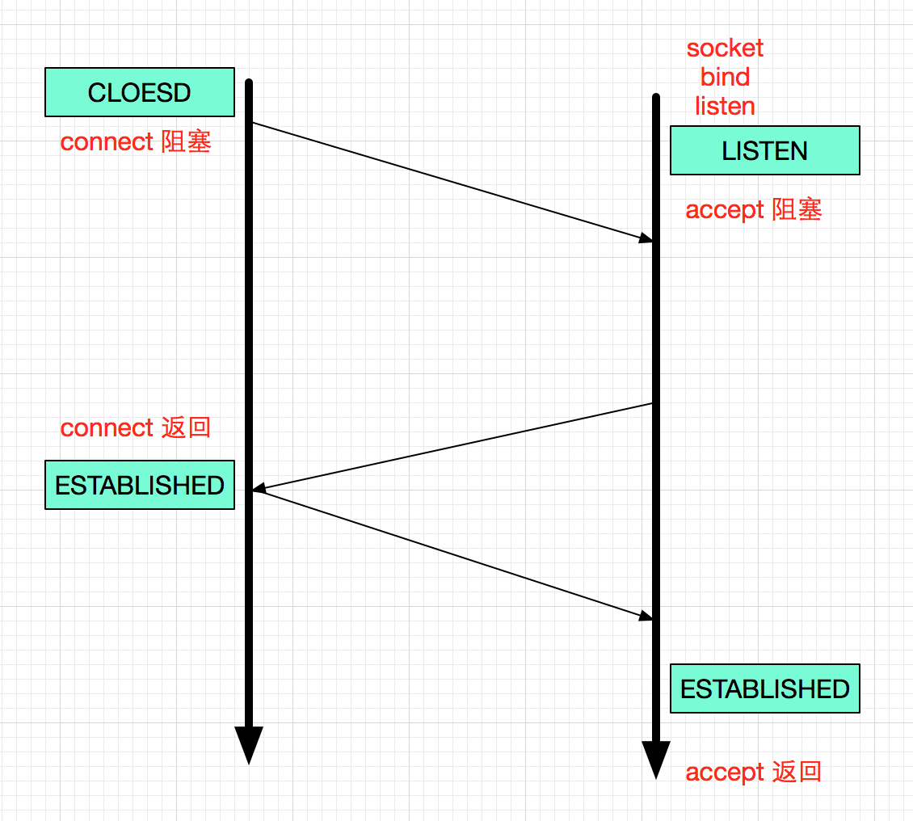
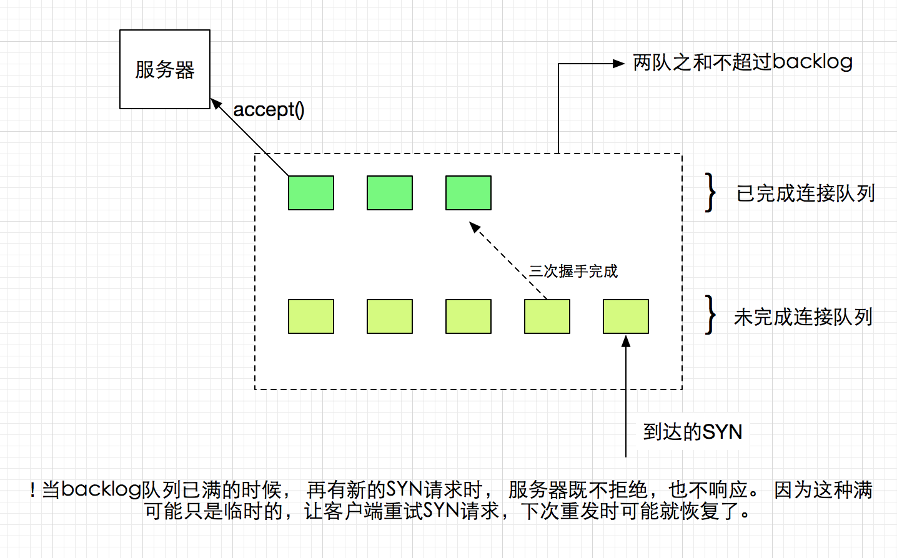

三次握手
listen 函数的backlog
服务端exampe:
int
main(int argc, char **argv)
{
int listenfd, connfd;
char buf[MAXLINE];
ssize_t n;
pid_t childpid;
socklen_t clilen;
struct sockaddr_in cliaddr, servaddr;
listenfd = socket(AF_INET, SOCK_STREAM, 0); // 1. socket
bzero(&servaddr, sizeof(servaddr));
servaddr.sin_family = AF_INET;
servaddr.sin_addr.s_addr = htonl(INADDR_ANY);
servaddr.sin_port = htons(SERV_PORT);
bind(listenfd, (SA *) &servaddr, sizeof(servaddr)); // 2. bind
listen(listenfd, LISTENQ); // 3. listen
while(1) {
clilen = sizeof(cliaddr);
connfd = accept(listenfd, (SA *) &cliaddr, &clilen); // 4. loop accept
while(1) {
if((n = read(connfd, buf, MAXLINE)) == 0)
break;
n = write(connfd,buf,n);
}
close(connfd);
}
}
客户端example:
int
main(int argc, char **argv)
{
char buf[BUFFSIZE];
int sockfd;
int tffd;
char time[64];
ssize_t n;
struct sockaddr_in servaddr;
if(argc != 2){
printf("usage: cmd <IPaddress>/n");
exit(0);
}
sockfd = socket(AF_INET, SOCK_STREAM, 0); // 1. socket
bzero(&servaddr, sizeof(servaddr));
servaddr.sin_family = AF_INET;
servaddr.sin_port = htons(SERV_PORT);
inet_pton(AF_INET, argv[1], &servaddr.sin_addr);
connect(sockfd, (SA *) &servaddr, sizeof(servaddr)); // 2. connect
while(1)
{
if((n = read(STDIN_FILENO,buf,BUFFSIZE)) == 0)
break;
n = write(sockfd, buf, n);
n = read(sockfd, buf, BUFFSIZE);
n = write(STDOUT_FILENO,buf,n);
}
exit(0);
}
当连接A kill掉，或者强行关掉连接后, 连接B 还向A write, write 不会返回错(因为这相当于A半关闭，B可以写), 但write会使连接A 发送一个RST到B, 如果RST先到B, 这时连接B还调用了read(也有可能RST后到， 连接B先read, 这时read 正常返回0, 因为对端close了), 就会导致 Connection reset by peer. 这种情况可能是:
- 客户端关掉页面， 服务器还不知道
- 服务器的并发连接数超过了其承载量,服务器会将其中一些连接关闭 (nginx 这样实现的?, 待确认)
net.ipv4.tcp_abort_on_overflow 这个内核参数值决定了系统调用listen中backlog参数的作用。默认这个值为0，所以当 backlog队列已满时，新来的SYN请求， server不予理会，那么client会重发SYN, 那时backlog队列也许已经恢复了。 如果这个值设为1, 那么当backlog满的时候 新来的SYN, 服务器会直接返回RST, 导致”Connection reset by peer”